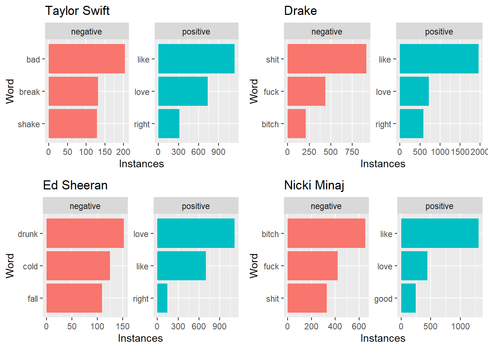
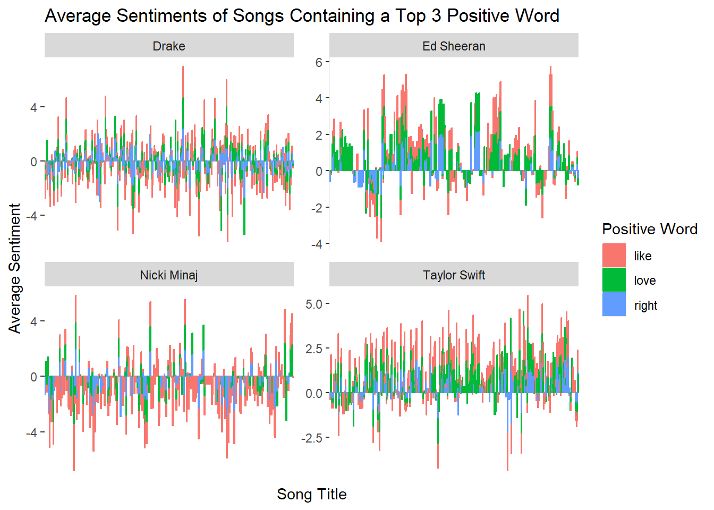
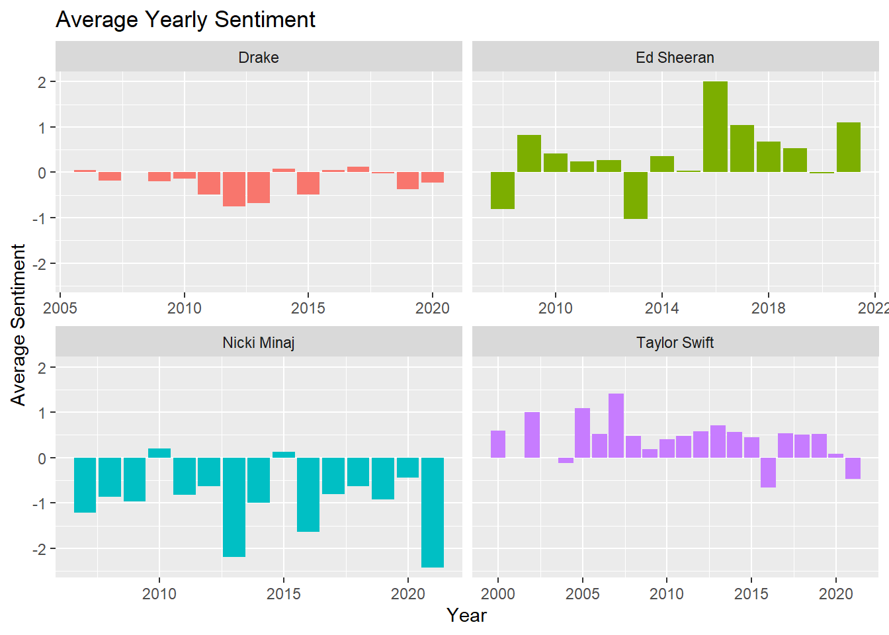
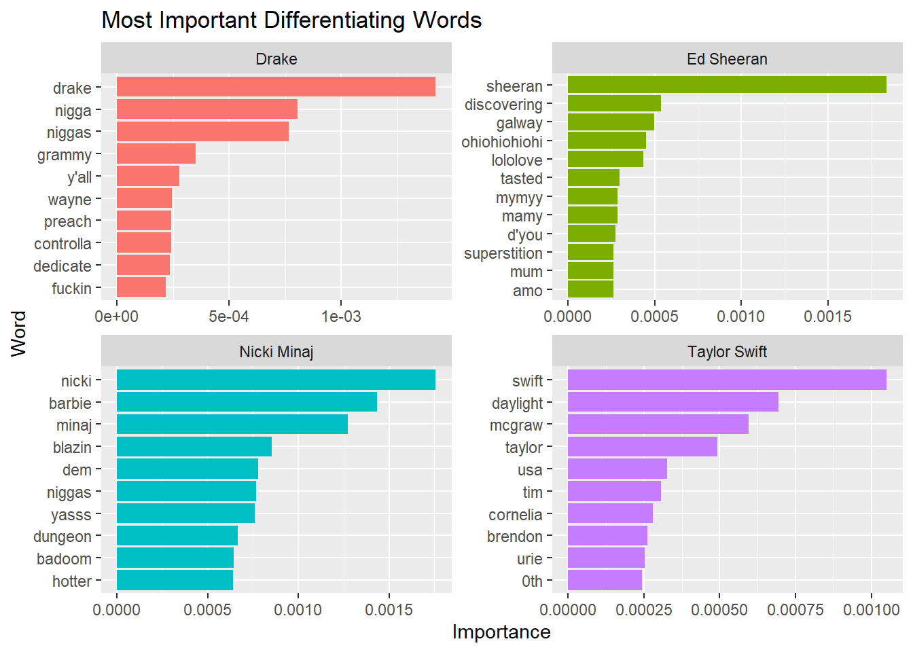
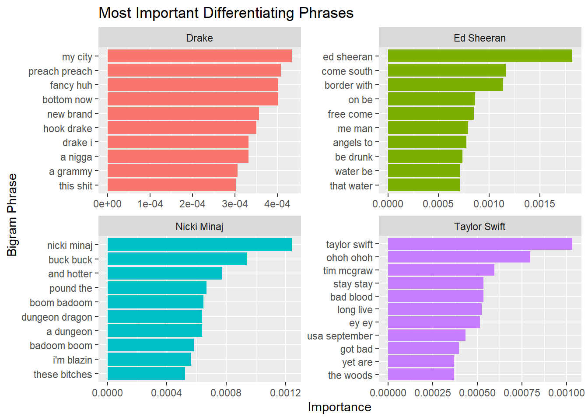

# A tibble: 4 × 2
Artist avg_word_length
<chr> <dbl>
1 Drake 3.88
2 Ed Sheeran 3.80
3 Nicki Minaj 3.87
4 Taylor Swift 3.92Mini Project 4
When I say Taylor Swift, what’s the first thing that comes to mind? Probably love, heartbreak, or self-reflection. What about Drake?
But although we think we understand the common themes within each artist’s music, are these tropes backed up by their lyrics? And are these artists really as different as we think?
To answer this question, let’s start by analyzing basic information from a few artists.
One way we could differentiate between genres is through their style of writing. We can start by analyzing the length of words to see if there is a common pattern, using the str_length function.
This seems to have no correlation, as all word length averages are within 0.12 letters of each other. Maybe this will change if we look at the title length instead:
# A tibble: 4 × 2
Artist avg_title_length
<chr> <dbl>
1 Drake 14.0
2 Ed Sheeran 23.0
3 Nicki Minaj 14.8
4 Taylor Swift 22.1From this table, we can see that Taylor Swift and Ed Sheeran have an average of 22/23 characters per title, while Drake and Nicki Minaj average about 14 characters per title.
I’m also curious to see how many songs each artist has that have one-word titles. To accomplish this, I used str_detect with a regex to filter for only one-word titles.
Artist num_titles
1 Drake 93
2 Ed Sheeran 58
3 Nicki Minaj 60
4 Taylor Swift 69Time to start looking at the lyrics themselves. Below are charts for each artist showing the top 3 most common positive and negative words across all of their lyrics. To analyze the sentiments, these charts use Bing Sentiments.

We can see 2 main takeaways from these graphs. Firstly, all 5 of these artists have the exact same Top 3 positive words across all of their songs: Love, Like, and Right. These words are common across the Pop, Acoustic, and Rap genres. Secondly, we can see a difference in the styles of music based on the negative words used. Nicki Minaj and Drake, our two representatives from the Rap genre, have swear words as their Top 3 negatives. Ed Sheeran and Taylor Swift represent the Pop/Acoustic genre, with their Top 3 negative words being related to getting drunk and handling breakups.
Let’s take a closer look at the songs that use these positive words, and see if we can find a difference in the sentiments. The first step is to filter for the words using str_detect and a regular expression, and then make the charts.

This graph shows the song title on the x axis, and the average sentiment on the y axis. Each graph shows a different artist, and the color represents which positive words are present in that song. These graphs only take into account songs that contain “Like”, “Love”, or “Right”, which is most songs, so we can still analyze general trends.
These charts aren’t super helpful since there’s so much going on, but we can still see a few insights. Most obviously, Nicki Minaj has mostly negative songs, and Taylor Swift and Ed Sheeran have mostly positive songs. Drake is all over the place, with a mainly even number of positive and negative songs. This is similar to what we would expect based on their styles of music.
We can also see that songs that mention “Love” are commonly positive, with very few being negative. “Like” and “Love” don’t seem to have much effect on the overall song sentiment.
Next, let’s analyze each artist’s sentiments over time to see if there are any shifts throughout each artist’s career. This chart uses the Afinn Sentiments to analyze the text.

We can see that artists generally follow the same sentiments throughout their careers, with the exception of a few albums. This chart further emphasizes our previous conclusions. Drake has both positive and negative songs, so his music averages out to be fairly neutral. Nicki Minaj has almost exclusively negative music, while Ed Sheeran and Taylor Swift are almost exclusively positive.
We’ve identified a clear difference between these 2 genres (Rap being negative, and Pop/Acoustic being positive), but let’s get a clearer look on which words differentiate each of the different artists.

In these plots, we can see which words are common in one artist’s lyrics and not another. This isn’t super interesting, since most differentiating words are the artist’s name or super specific phrases that are unique to one artist. For example, I would be shocked if any other artist besides Ed Sheeran uses “ohiohiohiohi” in their lyrics.
Let’s see if this changes when we consider 2-word combinations.

Here we can see which two-word combinations best identify each artist. For some reason, one common differentiating term is the artist’s name. Although they reference themselves occasionally, this is mostly due to the inclusion of which artist is singing for songs that feature multiple artists. For example, in Taylor Swift’s song Exile ft. Bon Iver, this lyrics in this dataset say “Taylor Swift” before her singing parts and “Justin Vernon” before his singing parts. Again, these phrases are mainly just silly phrases or made-up terms, and isn’t super useful.